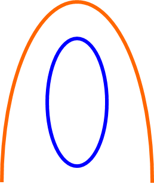
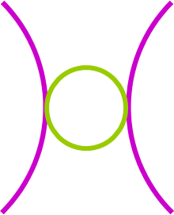
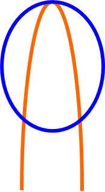
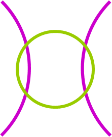

Systems of Second Degree Equations & Inequalities
Solutions to a System of Conic Equations| No Solutions | 1 Solution | 2 Solutions | 3 Solutions | 4 Solutions |
|---|---|---|---|---|
|  |  |  |  |
The number of solutions to a system of conic equations is equal to the number of intersection between graphs
You can solve as system of conic equations through:
You can solve as system of conic equations through:
- Substitution
- Elimination
- Graphing Calculator
- Matrices
ex) Solve the system:
$\table x^2+y^2=20,(x-5)^2+(y-5)^2=10; x^2+y^2-20=0, x^2+y^2-10x-10y+40=0$
$\table x^2+y^2-20=x^2+y^2-10x-10y+40; 10y=-10x+60; y=-x+6$
$\table x^2+(-x+6)=20; x^2+x^2-12x+36=20; 2x^2-12x+16=0; x^2-6x+8=0; (x-4)(x-2)=0; x=4\text", "x=2$
$\table x=4, x=2; y=-x+6, y=-x+6; y=-4+6, y=-2+6; y=2, y=4; (4,2), (2,4)$
$\table x^2+y^2=20,(x-5)^2+(y-5)^2=10; x^2+y^2-20=0, x^2+y^2-10x-10y+40=0$
$\table x^2+y^2-20=x^2+y^2-10x-10y+40; 10y=-10x+60; y=-x+6$
$\table x^2+(-x+6)=20; x^2+x^2-12x+36=20; 2x^2-12x+16=0; x^2-6x+8=0; (x-4)(x-2)=0; x=4\text", "x=2$
$\table x=4, x=2; y=-x+6, y=-x+6; y=-4+6, y=-2+6; y=2, y=4; (4,2), (2,4)$
Video